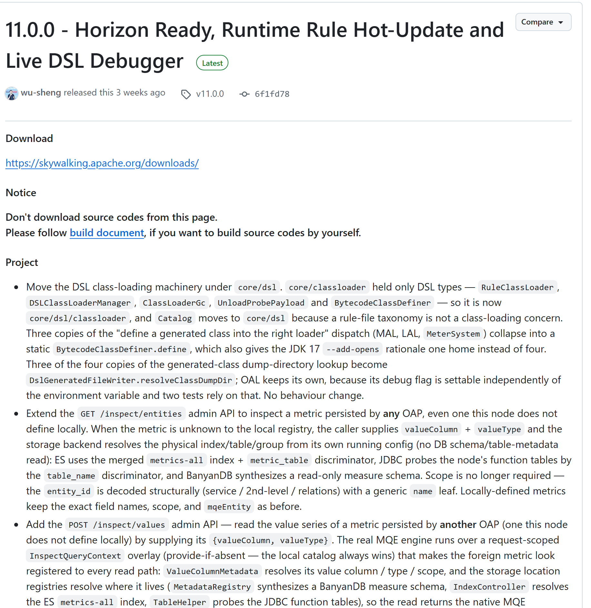
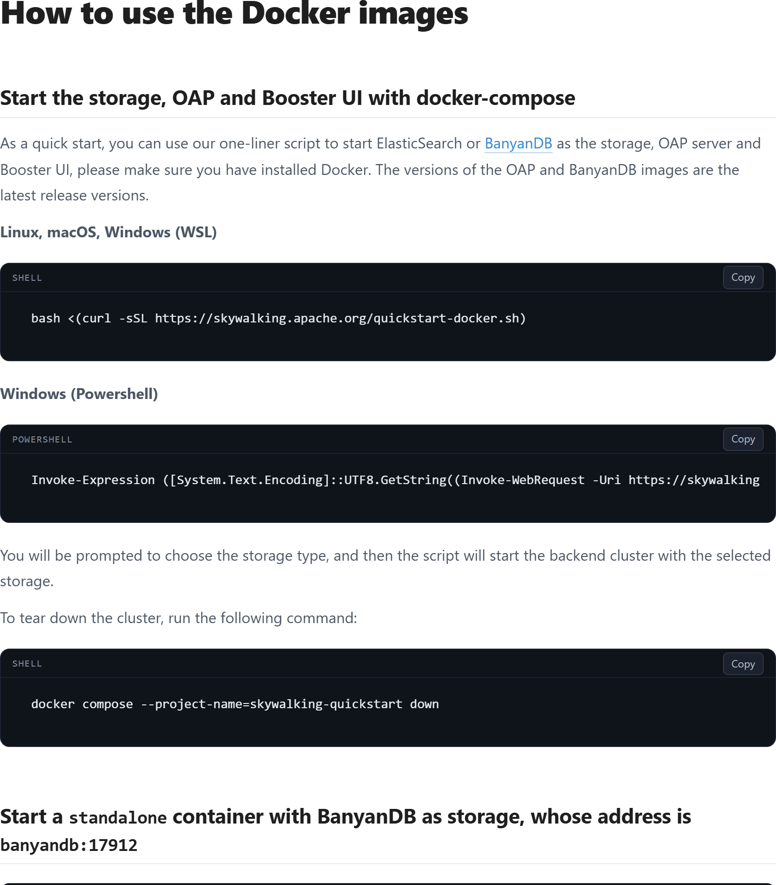
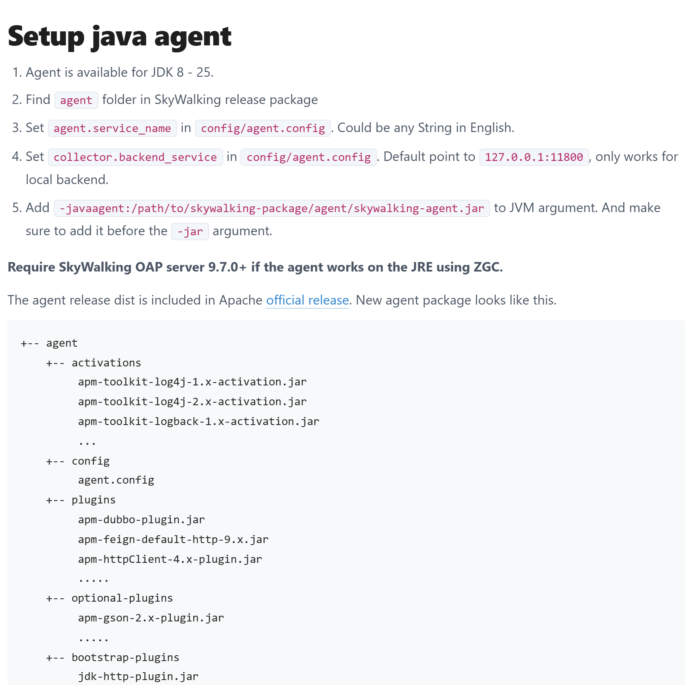
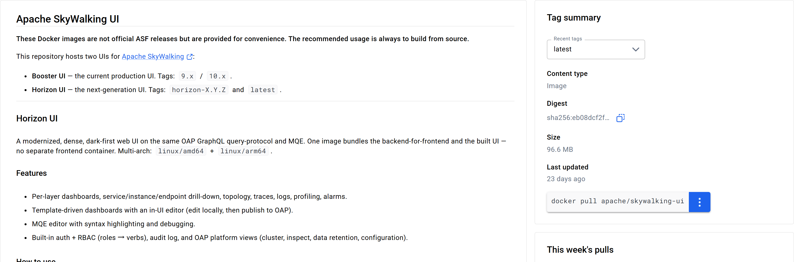

OSS PROJECT INTRO · SKYWALKING 系列第 2 期：5 分钟跑起来
上一期我们认识了 SkyWalking——无侵入的链路追踪 APM，心智模型是"Java agent 字节码增强，应用一行代码不改，调用链自动上网"。今天把认识变成动手。本期结束，你将亲手做出四样东西：一套跑起来的 OAP + UI 后端、一个挂上 agent 的示例应用、Trace 页里的第一条调用链瀑布、拓扑图上带调用关系的服务节点。全部命令逐条对照官方文档（2026-09-20 核对），跟着敲就能通；最后给一份"三条全绿才算跑通"的判定清单和六个高频翻车点的解法。
上一期留了一个尾巴：接入的全部仪式感，就是启动命令里的一行 JVM 参数。今天验证它。先给本期定一个能自测的目标——不是"大概会用了"，而是下面这条端到端演示链，每一环都有官方口径的预期结果：
-javaagent 启动；为什么示例要起两个服务？因为拓扑图的"边"至少要两个节点才画得出来——单服务只能看到孤零零一个点，体现不出 SkyWalking 最值钱的跨服务串联。所以本期做一个最小的两跳调用：入口服务 demo-app 通过 HTTP 调用后端服务 demo-api，两个都挂 agent。五分钟的口径也从这来：命令本身几分钟敲得完，第一次拉镜像的时间取决于网速，耐心等它下完。
环境要求只有一条硬的：装好 Docker（含 Docker Compose）。官方《Backend setup on Docker》文档的快速启动脚本只依赖 Docker，Linux、macOS、Windows（WSL 或 PowerShell）都能跑。内存方面官方文档没有给"最低多少 G"的硬指标，但有个实打实的口径：官方 docker-compose 示例里 OAP 默认堆是 -Xms2048m -Xmx2048m——也就是光 OAP 一个容器就要吃 2 GB 堆，加上存储和 UI，给 Docker 分 4 GB 以上可用内存再动手，能避开"容器反复重启"这个最常见的首跑翻车。
版本钉子。SkyWalking 的后端和语言 agent 是两个仓库、两条独立演进的版本线，版本号不同步是常态，别互相"配对"：
| 组件 | 本期基准 | 说明 |
|---|---|---|
| OAP 后端 | v11.0.0（2026-08-28，GitHub Latest） | 与上一期选型期的口径一致，本系列全程锚定它 |
| Java agent | v9.7.0（2026-08-14） | apache/skywalking-java 仓库 Latest；与 OAP 版本线独立 |
| BanyanDB 存储 | 0.11.0 | 快速启动脚本内置默认，OAP 11 配套 |
| Horizon UI | 1.0.0 | v11 起的新一代 UI，镜像 tag 形如 horizon-1.0.0 |

apache/skywalking 的 GitHub Releases 页：11.0.0 挂 Latest（2026-09-20 截图，UTC）。注意页面 Notice 原文提示别从这里下源码包——二进制发布统一走 skywalking.apache.org/downloads/，agent 包也一样。官方文档给的最快路径是一条管道命令：下载并执行官方快速启动脚本。它先检查 Docker，再让你选一次存储，然后自动拉起三件套（命令逐字对照《Backend setup on Docker》，2026-09-20 核对）：
# Linux / macOS / Windows(WSL)：官方 Quick start with docker-compose
bash <(curl -sSL https://skywalking.apache.org/quickstart-docker.sh)
# Windows PowerShell 等价命令（官方同页原文，节选）：
# Invoke-Expression ([System.Text.Encoding]::UTF8.GetString(
# (Invoke-WebRequest -Uri https://skywalking.apache.org/quickstart-docker.ps1 -UseBasicParsing).Content))脚本会让你选存储：1 是 Elasticsearch，2 是 BanyanDB。上手期选 2（BanyanDB）——它是 SkyWalking 自研的可观测数据库，v10 起的默认推荐存储，单容器就跑起来，不像 ES 还要单独调堆内存。选完脚本拉起三个容器（镜像与版本为脚本内置默认值）：apache/skywalking-oap-server:11.0.0、apache/skywalking-banyandb:0.11.0、apache/skywalking-ui:horizon-1.0.0，项目名固定为 skywalking-quickstart——拆除时也要用这个名字。

官方《Backend setup on Docker》"Start the storage, OAP and Booster UI with docker-compose"一节原文：一键脚本（Linux/macOS/WSL 与 PowerShell 两版）加拆除命令（2026-09-20 截图）。对我们这套 OAP 11 来说，容器里跑的是新一代 Horizon UI。几十秒到几分钟后（首次拉镜像看网速），打开http://localhost:8080。v11 的 Horizon UI 带登录页，快速启动脚本配置的账号是用户名 skywalking / 密码 skywalking（脚本明确标注这是 quickstart 专用凭据，生产环境必须换掉）。把起之后"谁在哪个端口"列成一张表，后面排障全靠它：
| 端口 | 谁在听 | 你什么时候碰它 |
|---|---|---|
| 8080 | Horizon UI（容器内 8081 映射而来） | 浏览器打开看板，账号 skywalking/skywalking |
| 11800 | OAP 的 gRPC 接收端口 | agent 上报数据指它（backend_service 参数） |
| 12800 | OAP 的 HTTP 端口（GraphQL 查询 / REST） | UI 查数据走它；agent 不用它 |
| 9200 | Elasticsearch（选 ES 存储时才有） | ES 存储路线的节点端口 |
| 17912 / 17913 | BanyanDB 数据口 / Web 界面 | BanyanDB 路线；17913 可看存储自带界面 |
官方 backend-setup 文档的原话值得记一句："OAP listens on 0.0.0.0/11800 for gRPC APIs and 0.0.0.0/12800 for HTTP APIs"——11800 收数据（gRPC），12800 出数据（HTTP 查询）。这一收一出，就是下一节 agent 参数和第 08 节高频报错的根源。
agent 从哪拿？从 skywalking.apache.org/downloads/ 的官方发布包里拿（仓库归属 apache/skywalking-java，最新 v9.7.0，2026-09-20 核对）。下载对应版本的压缩包，解压后是一个 agent 目录。注意别把两个名字搞混：目录叫 agent，目录里的 jar 叫 skywalking-agent.jar——-javaagent 参数要指向的是后者。目录结构（官方《Setup java agent》文档原文口径）：
agent/
+-- skywalking-agent.jar # agent 本体：-javaagent 指向它
+-- config/
| +-- agent.config # 配置文件（可用 -D 系统属性逐项覆盖）
+-- plugins/ # 已启用插件：在这里的全部生效
+-- optional-plugins/ # 可选插件（如 gson）：想用就拷进 plugins
+-- bootstrap-plugins/ # 引导类插件（如 jdk-http-plugin）
+-- activations/ logs/ # 日志桥接激活器 / agent 运行日志两个要点。第一，plugins 目录即生效清单：官方文档原话是"All plugins in /plugins folder are active. Remove the plugin jar, it disabled."——Tomcat、Spring、HttpClient、Dubbo 这些常用插件默认就在里面，你的应用大概率开箱即被覆盖；不想追踪某个组件，把对应 jar 挪走即可。第二，agent 支持 JDK 8 到 25（同页原文），老项目和新技术栈都能挂。排障时最先看的是 logs/ 下的 skywalking-api.log——agent 有没有连上后端、有没有上报，日志全记得清清楚楚。

官方《Setup java agent》：五步接入清单（JDK 8-25、agent.service_name、collector.backend_service 默认 127.0.0.1:11800、-javaagent 要放在 -jar 之前）与新包目录结构（2026-09-20 截图）。示例应用用两个最小的 Spring Boot 服务（任意能跑的 Spring Boot 项目都行，关键是挂上 agent）。demo-app 是入口，收到请求后通过 HTTP 调用 demo-api，这样一次请求会跨两个 JVM 进程——链路与拓扑才有戏唱：
// demo-api：被调方，一个最简端点（8081）
@RestController
public class ApiController {
@GetMapping("/api")
public String api() { return "ok"; }
}
// demo-app：入口，用 RestClient 转调 demo-api（8080）
@RestController
public class WebController {
RestClient client = RestClient.create();
@GetMapping("/hello")
public String hello() {
return client.get().uri("http://127.0.0.1:8081/api").retrieve().body(String.class);
}
}启动命令就是上一期预告过的"一行 JVM 参数"，两个服务各起一份，只有三处不同：jar 名、service_name、端口。注意 -javaagent 必须放在 -jar 参数之前（官方文档强调的顺序）；agent 默认读 config/agent.config，但官方支持用 -Dskywalking.* 系统属性逐项覆盖，命令行传参比改配置文件更适合演示：
# 先起被调方，再起入口（-javaagent 在 -jar 之前；路径换成你的解压路径）
java -javaagent:/path/to/agent/skywalking-agent.jar \
-Dskywalking.agent.service_name=demo-api \
-Dskywalking.collector.backend_service=localhost:11800 \
-jar demo-api.jar --server.port=8081
java -javaagent:/path/to/agent/skywalking-agent.jar \
-Dskywalking.agent.service_name=demo-app \
-Dskywalking.collector.backend_service=localhost:11800 \
-jar demo-app.jar --server.port=8080三个参数各自的角色：service_name 是服务在 UI 里的名字（官方要求英文，起有业务含义的名字，别用默认 Your_ApplicationName）；collector.backend_service 是 OAP 的 gRPC 地址，默认 127.0.0.1:11800，本机跑就写 localhost:11800；agent 自己不需要任何端口，它是纯客户端，只出不进。应用代码、pom.xml、application.yml 一行没改——这就是上一期说的"改的是字节码，不是你的代码"。
对入口服务连发几次请求，把链路数据"打"出来。第一次访问要等 agent 完成字节码织入，稍慢属正常：
# 连发 5 次请求触发 trace（Windows 用浏览器刷 5 次也一样）
for i in 1 2 3 4 5; do curl -s http://localhost:8080/hello; done终端会回显 5 个 ok。这时打开 http://localhost:8080（账号 skywalking/skywalking），按这个顺序看三处：
demo-app 和 demo-api 两个名字。点进服务详情，KPI 卡片区开始出现吞吐量（每分钟请求数）、P99/P95 延迟、错误率的数字——OAP 的流式聚合算出来的，UI 默认展示最近的时间窗，数字没出现就把时间范围拉到最近 15 分钟刷新一下；/hello 记录。点开任意一条：上半场是这次请求的 Span 瀑布图——demo-app 的 HTTP Span 在最上面，下面挂着它调用 demo-api 的子 Span，各自的耗时、网络开销一目了然。这条瀑布，就是上一期说的"完整调用链"第一次在你眼前成形；demo-app 指向 demo-api 的一条有向边。Horizon UI 的节点带健康状态的圆环，边上有调用量的着色标注。你一行埋点代码没写，拓扑图自动长出来了。
Docker Hub 的 apache/skywalking-ui 镜像页（2026-09-20 截图）：一个镜像托管两代 UI——现役生产版 Booster UI（tag 9.x/10.x）与新一代 Horizon UI（tag horizon-X.Y.Z，dark-first 设计，功能覆盖分层面板、拓扑、Trace 瀑布、日志、告警）。镜像页同时注明这些镜像"not official ASF releases"，生产建议固定具体版本 tag。"服务起来了"只是前提，"数据上得来、看得见"才是结果。本期的跑通判定三条，全部可以在 UI 里当场自测：
| # | 判定 | 在哪看 | 为什么它算数 |
|---|---|---|---|
| ① | Trace 列表有记录 | Trace 页，服务选 demo-app | agent 织入、上报、OAP 接收落库，整条收数链路全通了 |
| ② | 点开有跨服务瀑布 | 任意一条 trace 的详情 | demo-app 下挂 demo-api 的子 Span——跨进程上下文传播成功 |
| ③ | 拓扑有节点有边 | Topology 页 | OAP 从链路数据聚合出服务依赖关系——拓扑引擎在工作 |
三条分别验证了采集、串联、聚合三件事：① 证明 agent 到 OAP 的数据通路是好的；② 证明 Trace ID 跨进程传递是好的（"链路"区别于"分散日志"的本质）；③ 证明 OAP 的流式分析在把明细加工成全局视图。组件活着不算跑通，数据成链才算。三条全绿，SkyWalking 就算在你机器上完整地转起来了。
按首跑出现概率排序。绝大多数"跑不通"集中在前三条，而且先看 agent 日志（logs/skywalking-api.log）再动手能省一半时间：
| 症状 | 原因与解法 |
|---|---|
| agent 挂了，UI 就是无数据 | 九成是 backend_service 地址错或网络不通。逐项查：地址是不是 OAP 的（别写成 UI 的 8080）；agent 在宿主机跑时依赖 compose 的端口映射，docker ps 确认 11800 映射存在；防火墙有没有拦。agent 日志里搜 gRPC / 报错关键字。 |
| 把 12800 填给了 agent | 11800 与 12800 分工不同：11800 是 gRPC 收数口（agent 专用），12800 是 HTTP/GraphQL 查询口（UI 专用）。填反了 agent 永远连不上。记住"收 11 出 12"。 |
| 拓扑有节点，Trace 列表是空的 | 多半是时间窗或时钟问题：UI 看板默认时间范围不含刚才的请求，拉到最近 15 分钟刷新；agent 与 OAP 所在机器时钟差太多，记录会"落"到所选窗口外。另外确认发过请求——拓扑由聚合产生，不等于有明细。 |
| 重启容器，数据全没了 | 快速启动是演示配置，BanyanDB 数据写在容器临时目录，down 即清空。要留数据得换正式部署：给存储配持久化卷（官方 docker 部署文档有扩展配置的挂载说明）。 |
| OAP 容器反复重启 / 一直 unhealthy | 先查内存：官方 compose 里 OAP 默认堆 2 GB，Docker 可用内存不够就会起来又挂。给 Docker 加内存，或降堆（改 JAVA_OPTS 环境变量）。docker compose ps 看健康状态，logs 看启动日志。 |
| 下了"源码包"找不到 agent 目录 | GitHub Releases 页的 Notice 明确写了别下 Source code（那是源码归档）。二进制统一从 skywalking.apache.org/downloads/ 拿，agent 包解压出来才是带 skywalking-agent.jar 的 agent 目录。 |
跑通之后，把今天发生的事画成一张图——四个角色各说了一句话，第 3 期会逐个拆开：
最后学会清场——这条比"跑起来"更常用。快速启动的整套东西用一个固定的 compose 项目名管理，拆除一条命令（官方文档口径）：
docker compose --project-name=skywalking-quickstart downdown 会把三个容器和演示数据一起删掉——它本来就没做持久化，重跑一遍启动脚本就又是一条"好汉"。两个服务的 java 进程直接 Ctrl-C 结束即可，agent 随进程消亡，不在你的应用里留任何东西——无侵入的最后一层含义：不想要了，去掉那行启动参数就行。
把链路数据的一生拆成四段看：agent 产出 → 网络传输 → OAP 接收 → 存储落库，问题一定出在你能定位到的最早一段。11800 是 OAP 的 gRPC 端口，职责是"收"——native agent、OpenTelemetry 等探针的上报走它；12800 是 OAP 的 HTTP 端口，职责是"出"——UI 的 GraphQL 查询和 REST 查询走它（官方 backend-setup 文档原话：OAP listens on 0.0.0.0/11800 for gRPC APIs and 0.0.0.0/12800 for HTTP APIs）。把 12800 填给 agent 后，agent 会尝试与 12800 建立 gRPC 连接——协议对不上，握手失败，数据在 agent 侧就发不出去，一环都没进。此时 OAP 日志岁月静好（它根本不知道有 agent 来过），应用也完全正常（agent 的失败被设计成不影响业务，日志里默默重试），唯一说真话的是 logs/skywalking-api.log 里的连接错误。这个坑的本质："端口通"和"协议对、职责对"是两回事——telnet 能连通 12800，不代表 agent 能用它上报。排查可观测系统的问题，先画收数链路再逐段验证，比在 UI 里反复刷新有效得多。
快速启动的定位是"最小代价看见第一条调用链"，官方把它做成一次性演示环境：镜像版本内置、存储单机临时目录、凭据 skywalking/skywalking 公开写死。数据丢失不是缺陷，是取舍——演示环境越接近"随时可拆"，新手越敢放开折腾。想保留数据，正确的姿势是换正式部署形态，按官方 backend-docker 文档的扩展机制逐项补课：给 BanyanDB（或 Elasticsearch）配持久化卷、把 horizon.yaml 里的凭据换成自己的（local 认证支持配置用户与 RBAC 角色）、按需固定镜像版本 tag。"只给 BanyanDB 容器挂个卷"为什么不算完整答案？因为持久化只解决了四分之一的问题：数据留下了，但凭据还是公开的、版本还是演示内置的、单机存储没有容量与可靠性规划——这种环境放到公网或多人共用的开发机上，等于一个无鉴权的全公司调用链数据库。可观测平台存的是全系统明细，安全等级应按"比业务库更敏感"对待。上手期用 quickstart 认识它，上生产前把官方部署文档过一遍，两步不要混成一步。
带走这五句话：
下期预告：第 3 期《核心概念与整体架构》——今天 UI 里那些名词（Service、Endpoint、Trace、Span）到底是什么关系，OAP 怎么把 Span 明细流式聚合成拓扑和指标，BanyanDB 为什么值得自研一个数据库。今天的每一步操作，都会在那里得到原理解释。
Primary source：SkyWalking 官方文档 · Backend setup on Docker（v11.0.0）——本期启动脚本、存储选择与拆除命令均出自该页（与所用版本匹配）；Java agent 接入与目录结构见 Setup java agent，端口语义见 Backend setup，版本发布记录见 GitHub Releases 与 skywalking-java Releases。
1. 快速启动脚本拉起的三件套是？
2. -Dskywalking.collector.backend_service 应该填哪个地址？
3. 拓扑图上要出现"两个节点一条边"，本期示例的关键设计是？
4. 用完 quickstart 执行 down 之后想保留 trace 数据，正确的做法是？